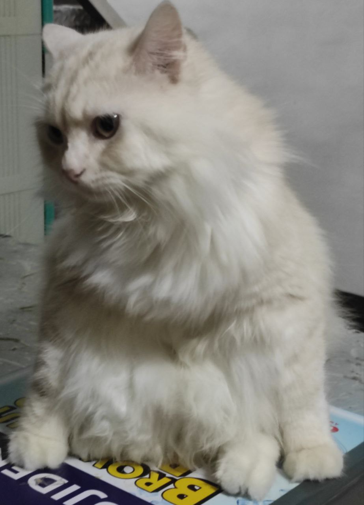
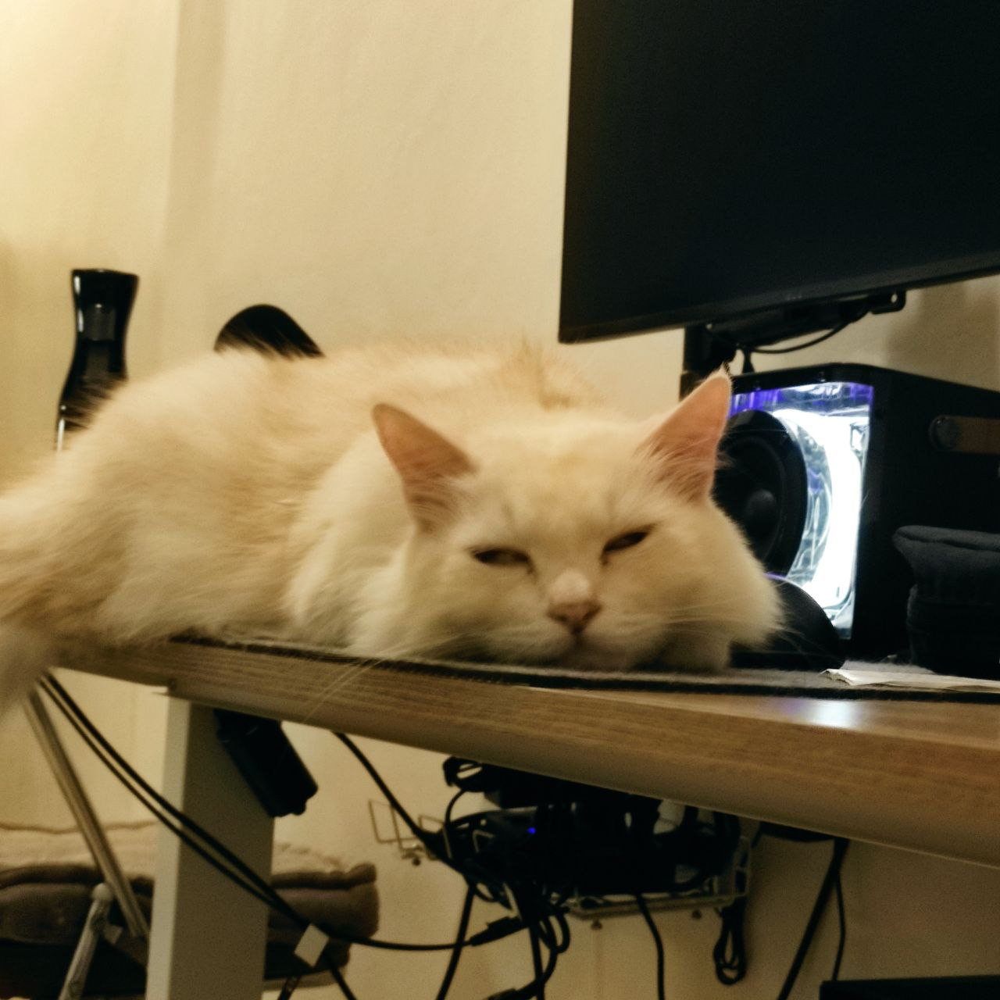
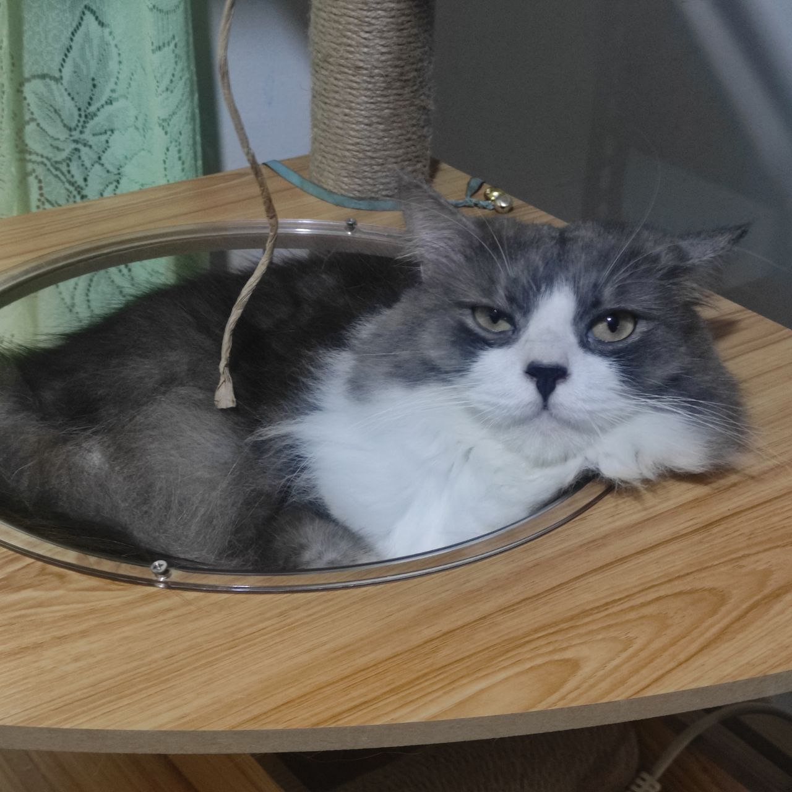

My Cats
This is a list of my cats.
- 
Awnold
Arnold affectionately referred to as "Awnold" is the eldest cat and also the biggest and fattest.
- 
Eli
Eli is the youngest sibling of Arnold, but he is very matured and more adept in hunting.
- 
Moby
Moby is the son of Arnold and is very playful and a scaredy cat.